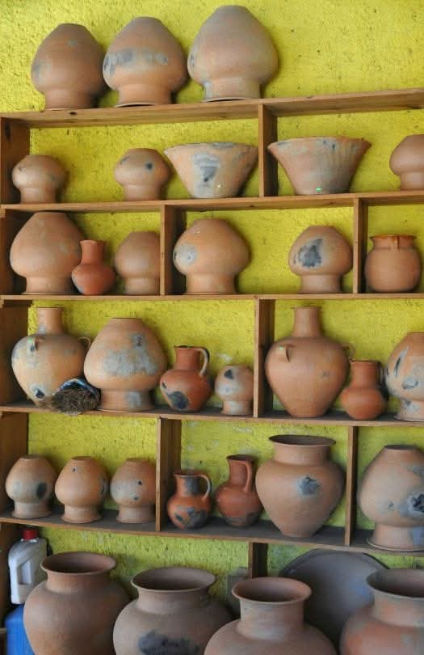
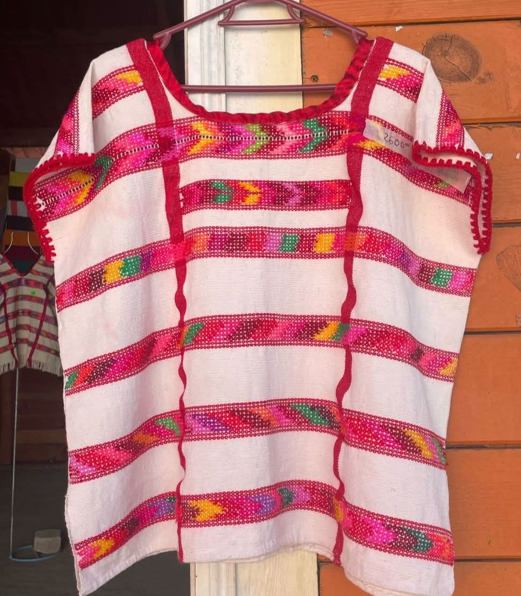
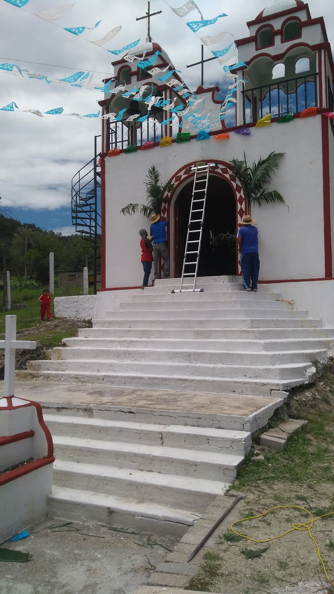
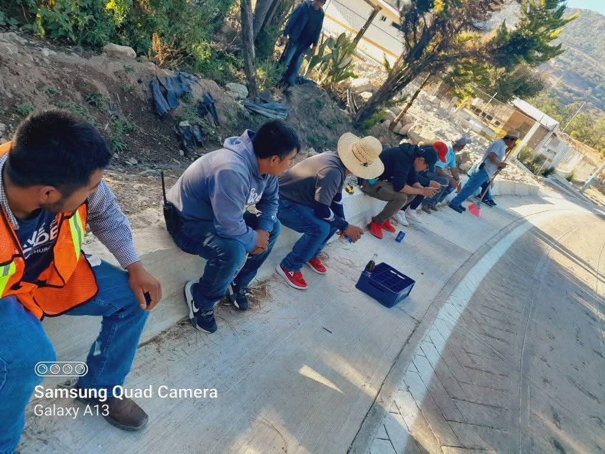
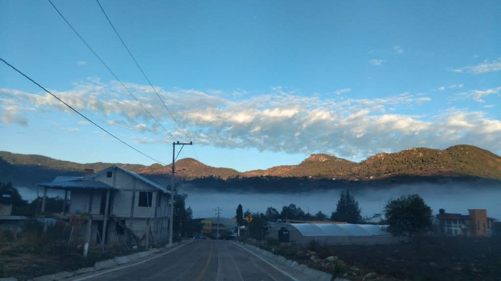

ISIDRO Y FELIPA, GUARDIANES DEL BARRO
A pesar de las dificultades económicas y la migración, Isidro León López y Felipa Morales mantienen viva la tradición del barro. Elaboran a mano tazas, platos y ollas, un oficio que ha pasado de generación en generación. Su historia fue reconocida en El Universal de Oaxaca.

TIERRA DE BORDADORAS TRADICIONALES
Además del barro, muchas mujeres del pueblo se dedican al bordado artesanal. Con hilos de colores y paciencia, crean servilletas, blusas y huipiles con diseños florales y símbolos culturales.
FIESTA PATRONAL QUE REUNE FAMILIAS MIGRANTES
Cada 29 de junio, el pueblo celebra a San Pedro Apóstol. Es una fecha especial, ya que muchos habitantes que migraron a otras ciudades o a Estados Unidos regresan al pueblo para convivir y participar en las festividades.
COMUNIDAD ORGANIZADA POR USOS Y COSTRUMBRES
San Pedro Llano Grande se organiza mediante tequios (trabajo colectivo sin paga) y cargos comunitarios rotativos, lo que refuerza la colaboración y la identidad local.
PAISAJES DE CERROS, NEBLINA Y BOSQUE
El pueblo está rodeado de cerros y bosques de pino. En temporada de lluvia, la neblina cubre los caminos y las casas, dándole un ambiente tranquilo y místico, típico de la región mixteca.
|